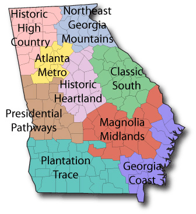

Georgia Hikes
Georgia Hikes
Choose from the dropdown menu to display Georgia parks and their hiking trails, as well as other park features. You can explore their difficulty levels that are color-coded for your convenience. When you make a selection, you will be presented with a 5 day forecast for that location.
